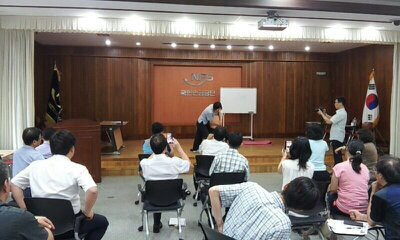
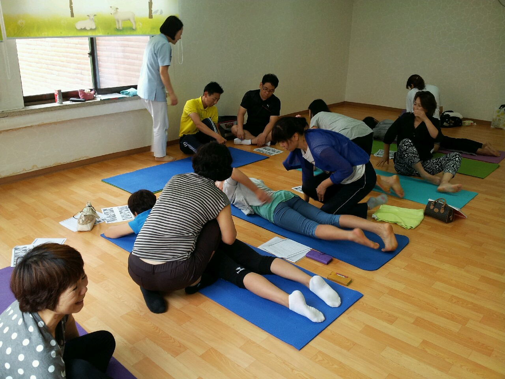
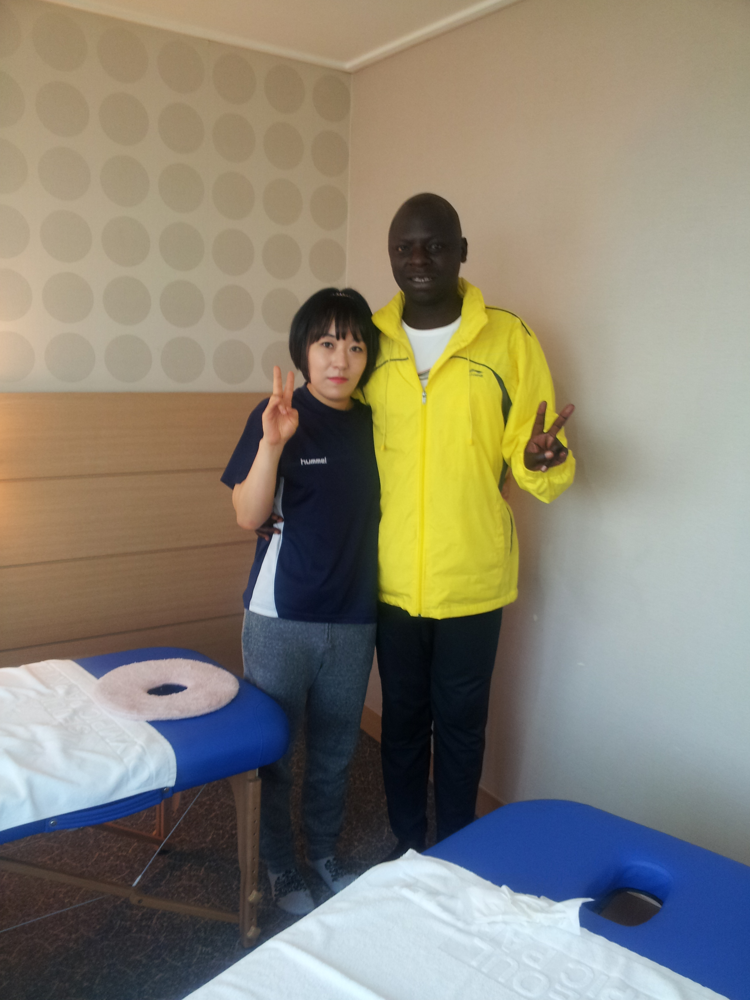

국민연금보험 강의
국민연금보험 강의 사진

사랑재 요양원 봉사사진
사랑재 요양원 봉사하는 사진

동아국제 마라톤대회
동아 국제 마라톤 대회 참석
스포츠마사지활동사진
스포츠 마사지 활동 사진(소개 첨부)
오늘의 마사지 치유
일자목
사람의 정상적인 목뼈의 형태는 외부의 충격을 완화해주고 분산시킬 수 있도록 C자 형의 커브로 되어 있습니다. 정상적인 목 상태인 C자형 커브는 유아기 때부터 천천히 목의 만곡을 형성하게 됩니다. 하지만, 오랜 시간 잘못된 자세 등으로 인하여 목의 C자 형태가 점차적으로 I자형으로 변형되게 됩니다. 특히 컴퓨터, 독서, 스마트 폰 사용으로 인하여 일자목이 발생되는 경우가 많습니다. 일자목이 되면 머리의 하중과 외부의 충격을 목이 그대로 받게 되어 통증이 발생됩니다.